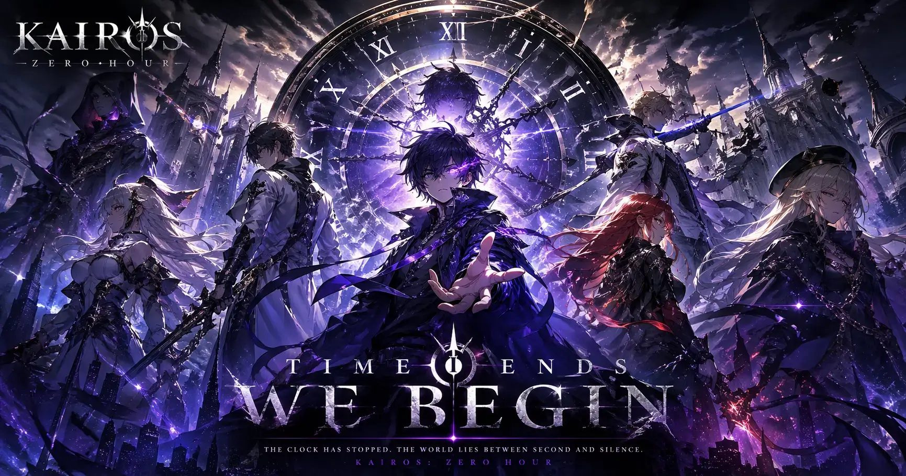
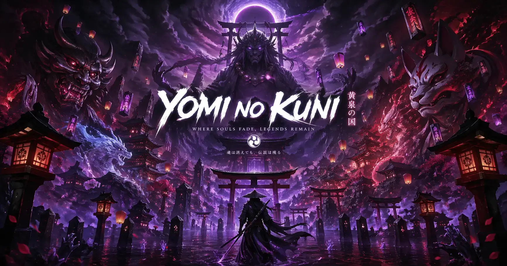
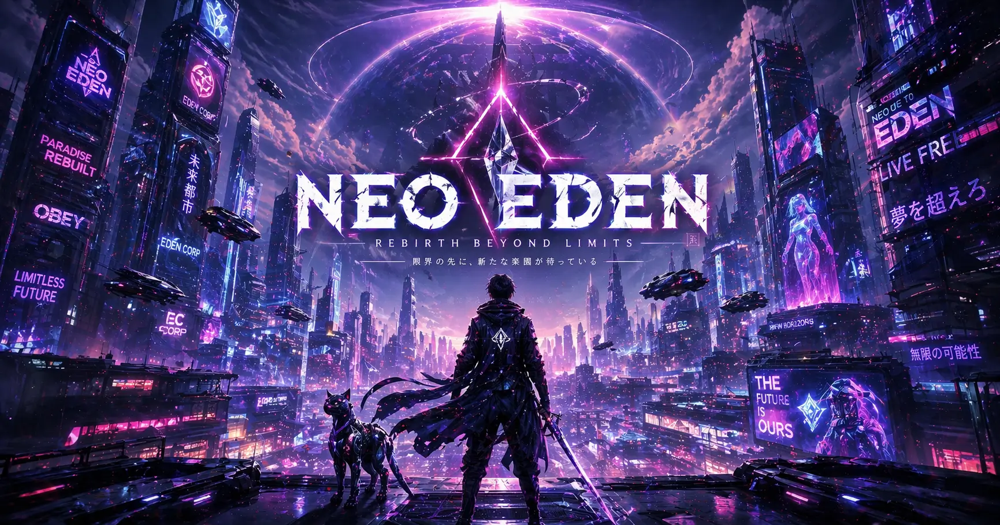

Gambar: © A-1 Pictures / Solo Leveling Animation Partners
Review Solo Leveling S2: Lebih Brutal, Lebih Ngegas!
Sun Jinwoo comeback dengan skill baru dan musuh yang lebih gila. Animasi A-1 Pictures bikin mata lo berdarah. Worth it gak ditonton?
Klik buat baca review lengkap →

Gambar: © WIT Studio / CloverWorks
Kairos: Zero Hour - Anime Time Stop dari Ex-Tim AoT
Dunia dimana waktu bisa di-pause 8 detik, tapi ngorbanin 1 tahun umur orang random. WIT + CloverWorks kolab. Vibes Attack on Titan balik lagi?
Klik buat baca review lengkap →

Gambar: © Ufotable
Yomi no Kuni - Dark Fantasy Ufotable + OST Sawano
Biro wisata ke akhirat buat "liburan perpisahan" 3 hari. Manga 2014 yang akhirnya diadaptasi Ufotable. Fans udah nunggu 10 tahun.
Klik buat baca review lengkap →

Gambar: © Studio Trigger
NEO-EDEN - Original Trigger: NPC Sadar & Bikin Revolusi
Bumi ancur, manusia hidup di server. Tapi NPC mulai sadar mereka NPC. Kata sutradaranya: "Kill la Kill ketemu Matrix". Trailer 15 detik 8 juta views.
Klik buat baca review lengkap →